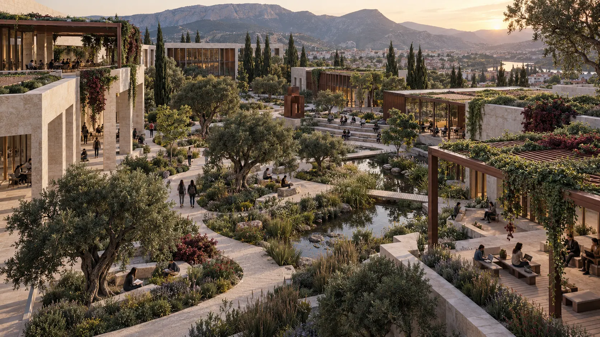
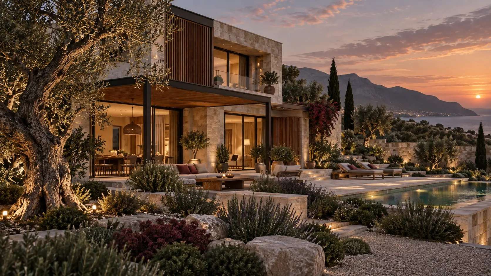
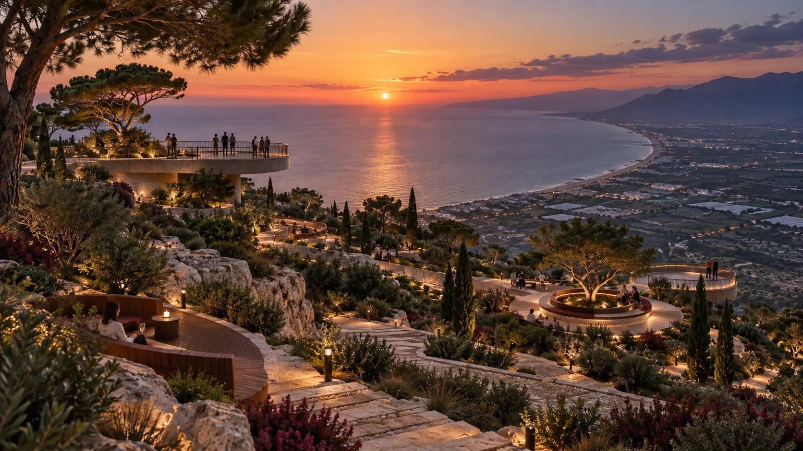
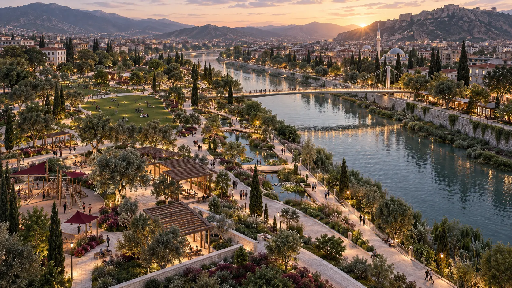

UZMANLIKLAR
Fikirden
görselleştirmeye.
Tasarım kararlarını teknik olarak geliştiren ve anlaşılır bir sunuma dönüştüren üretim becerileri.

01
Teknik çizim & planlama
Alanı doğru okumak ve kararları netleştirmek.
Analiz, vaziyet planı, kesit ve proje düzenleme çalışmalarını tasarımın temel parçası olarak ele alıyorum.
- AutoCAD ile teknik çizim
- Alan analizi ve proje düzenleme
- Bitkilendirme ve uygulama projelerini inceleme

02
3D modelleme
Mekânsal fikri hacim ve ölçekte görmek.
Mimari kütle, açık alan, cephe ve peyzaj ilişkisini üç boyutlu ortamda geliştirerek farklı bakış açılarından değerlendiriyorum.
- 3ds Max
- Mimari ve peyzaj modelleme
- Cephe ve çevre düzeni çalışmaları

03
Render & görselleştirme
Işık, malzeme ve atmosferi birlikte kurmak.
Tasarımın kullanımını ve karakterini anlatan gündüz/gece sahneleri ile sunuma hazır görseller üretiyorum.
- Lumion ve D5 Render
- Corona Renderer
- Malzeme, ışık ve çevre düzeni

04
Grafik sunum
Projeyi açık ve güçlü bir dille anlatmak.
Plan, kesit, analiz, render ve açıklamaları okunabilir bir hiyerarşi içinde bir araya getiriyorum.
- Adobe Photoshop
- Canva ve Microsoft PowerPoint
- Pafta ve portfolyo düzeni